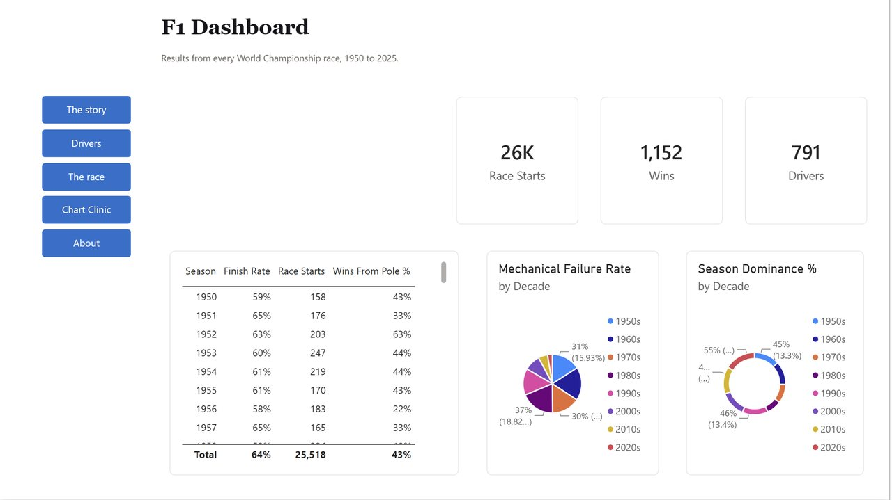
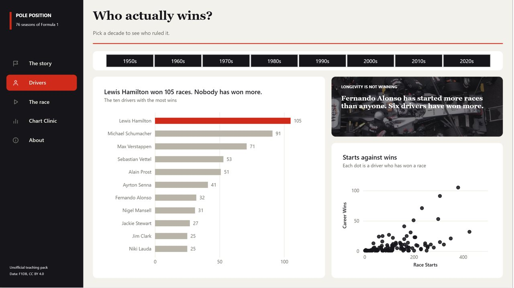
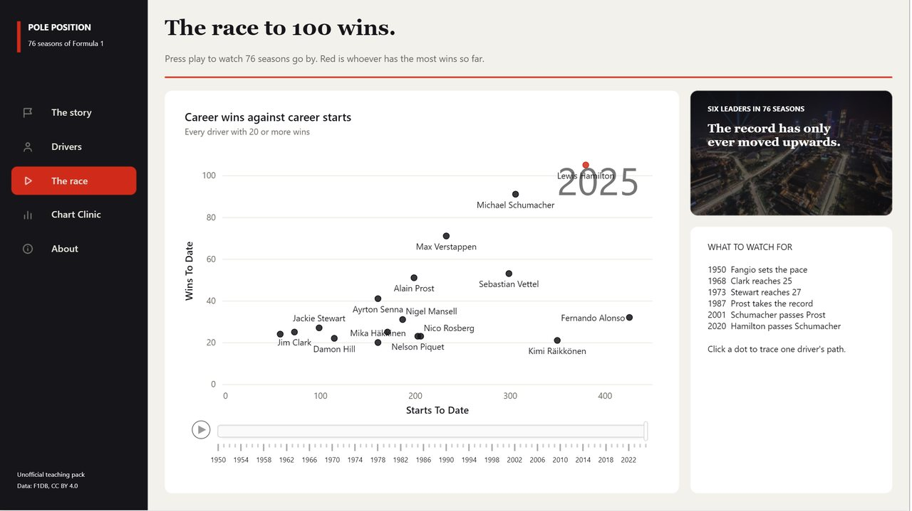
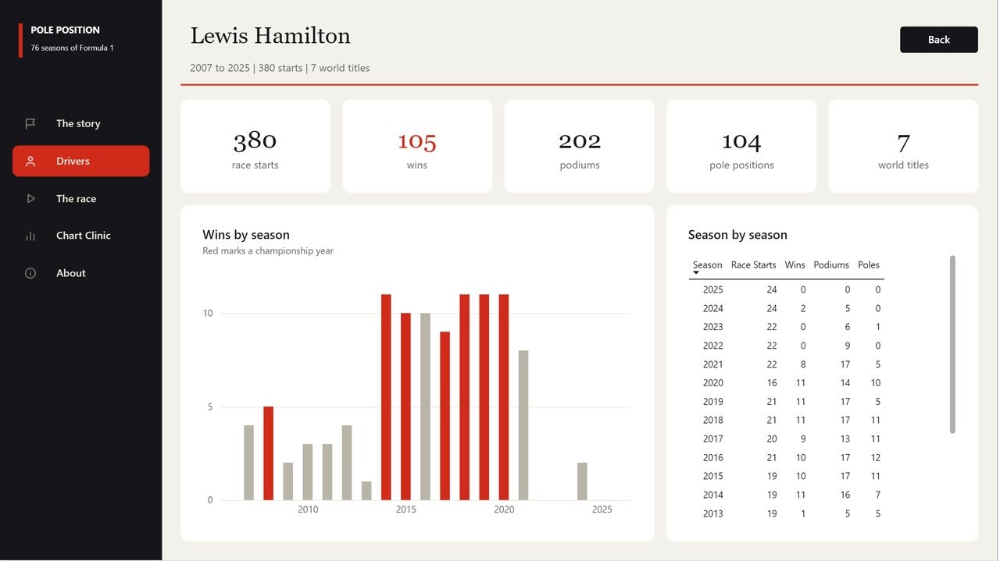
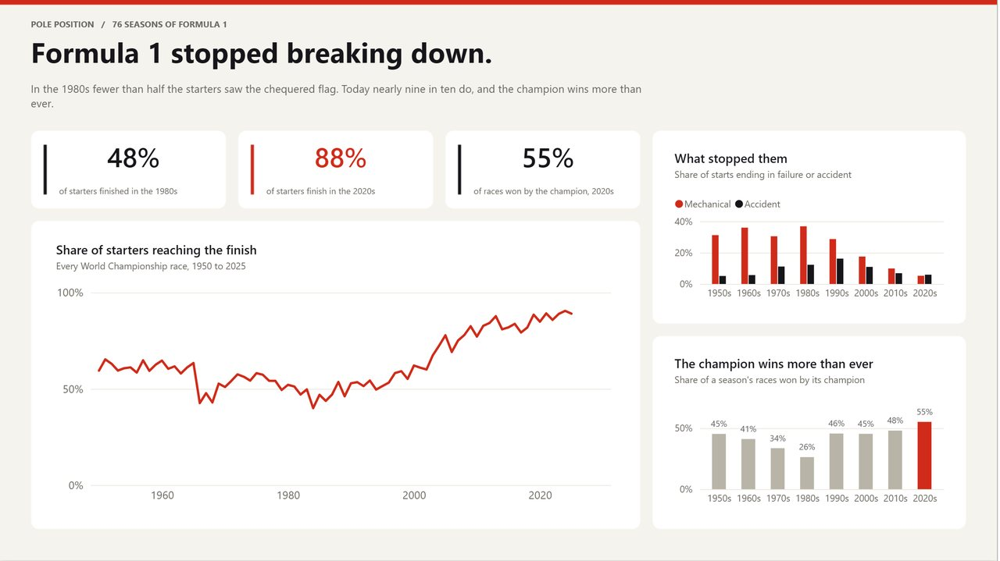
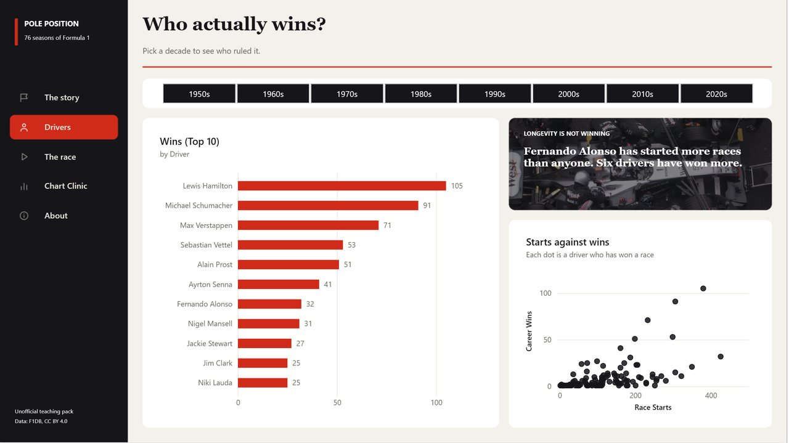
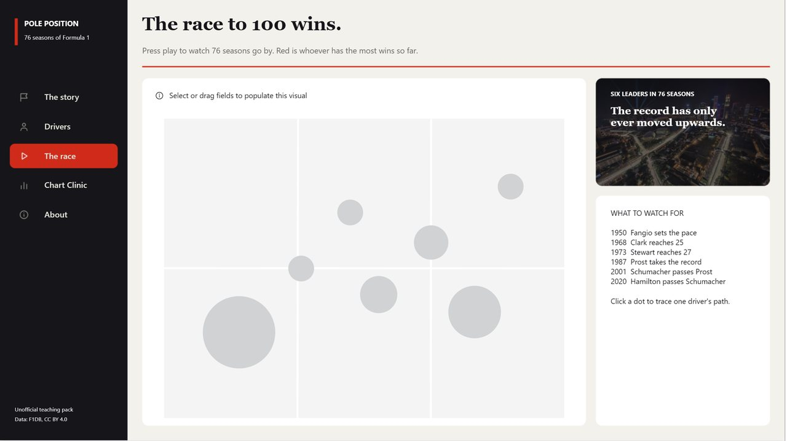
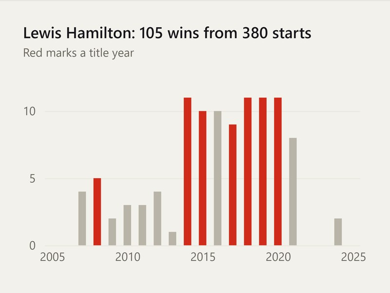
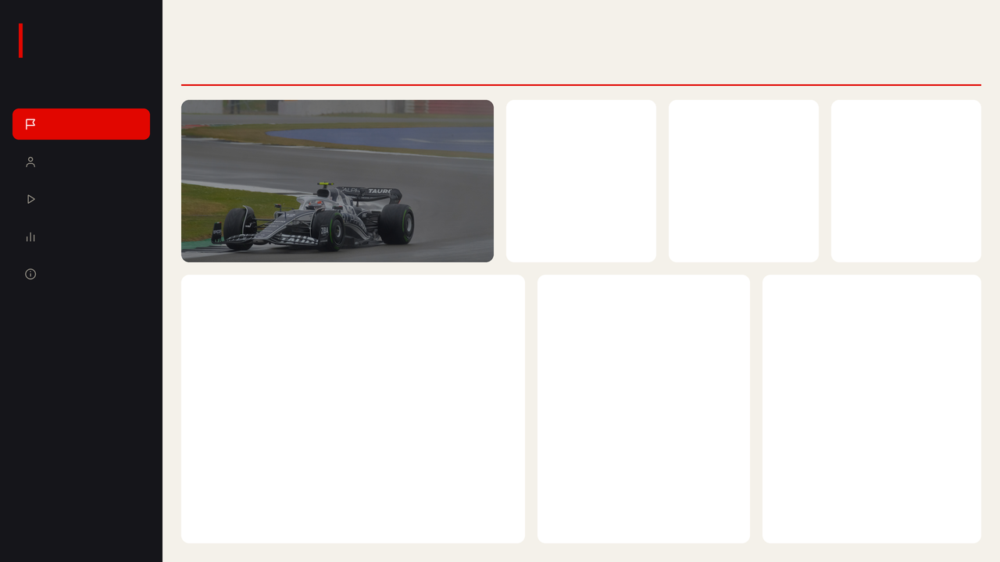

How to choose the right visual, lay out a page and tell a story with data. Then you redesign a plain report yourself.
WithRibesh Maharjan
Follow along on your own screen.
ribesh19.github.io/f1
Everything I click, you can click.

Say: "Type this address and keep the page open. Every demo I do, you can do on your own screen, at your own pace." The QR code and the download are on the What you will build slide; the voting code is the slide after it. Press Start clock. Arrows move between sections; N shows notes.
Hello
I am Ribesh Maharjan.
I design and deliver business intelligence solutions in industry, from messy source data to the report on someone's screen.
What I doData models, Power BI reports and the design decisions that make people actually use them.
Today's topicDashboard design and choosing the right visual, with real examples from my own work.
What you leave withA report you redesigned yourself, plus the files, theme and guides to do it again.
One minute. Say where you work and one project you are proud of. Edit the three boxes in index.html if you want different wording.
The plan
What we will cover.
Half talking, half doing. Tell them the workshop starts at about minute 45, so the download matters.
By the end of today
You will have built this.
A page that makes its point. Headline, three numbers, the right charts.

A title that rewrites itself. Click a decade and it follows.

A chart that moves. Press play: 76 seasons in twenty seconds.

A page for every driver. Right-click any name to open it.
Thirty seconds, plus time for people to type the address or scan the code: this is the slide to pause on until laptops are open. Do not explain how any of it works. Say: "You start from a plain file and build all four of these yourself in the last part." If Finished.pbix is open, press Play on The race once and move on.
One scan, then leave it open
Vote from your phone.
or type
ribesh19.github.io/f1/v
Each question appears on your phone by itself when we reach it. Nothing to install. No names.
Warm-up question
Have you used Power BI before?
Answer on your phone. The room's answers show on the big screen.
Wait here until the vote count stops climbing. Say: "Scan it once and leave it open. Every question I ask today will appear on your phone by itself." Read the room from the bars: if most say Never, slow down in the hands-on. Voting only runs from your own copy of this page: open it once with ?host on the end of the address and enter the PIN. If the bars stay empty, carry on: every later slide still works without votes.
1
Why design matters
The same numbers can be ignored or acted on. The difference is design.
ABOUT 10 MINUTES
Quick guess
In the 1980s, how many F1 cars that started a race finished it?
Vote on your phone, or drag to your guess on your own screen.
The question is on their phones: give it ten seconds and watch the vote count. You make a guess too, out loud: "I would have said about 70." Then lock it in: that also reveals how the room voted, with the right band in red. No volunteer needed. Then press "And today?".
Look first
Same data. Same measures. Which one would you trust?
BeforeAfter
Drag the slider left. Not one number changes.
It opens on the plain report. Say: "This is what Power BI gives you." Then drag the slider slowly to the left to uncover the designed one. Say: "Same data, same built-in visuals. You will build it in half an hour."
Try it
You get ten seconds.
Find the answer to one question: how many F1 cars finish the race today?
10
Ten seconds on the clock. Look for the answer.
Read the question out first so they know what to look for. They saw 88% two slides ago, and still will not find it on the plain report: that is the point. Run the plain one first, then the designed one: the slide gives the answer each time, so nobody has to speak. Each button also asks the phones "did you find it?", and the two bars beside the buttons fill in: the gap between them is the argument for design.
The idea
A data story needs three things.
Model: Brent Dykes, Effective Data Storytelling.
You click, you narrate. Line to use: "Data plus visuals is the plain report you just saw: correct, and nobody cares." Narrative means a headline, an order, and a reason to care.
2
Dashboard design
Audience, layout, clutter, colour and words. Five decisions before you add a single chart.
ABOUT 18 MINUTES
Decision 1 · Audience
Who is it for, and what will they do with it?
Click through all four without stopping to ask. Line: "Same data, four different pages, because four different people are looking." Each example is a page in Gallery.pbix.
Decision 2 · Layout
Tell the eye where to go.
People read a page top-left to bottom-right. Put things in the order you want them understood.
Step through the five areas. Size and position do the work: the biggest text is the finding, the numbers that prove it come next, detail sits at the bottom.
The button tells you what goes next, so read it out and click. Line: "Everything that is not data has to earn its place." Slow down on the last click: the title becomes the finding.
Decision 4 · Colour
Colour is a signal, so use it once.
Grey for context, one colour for the point.
Same meaning, same colour, on every page.
Never rely on red against green alone.
About one in twelve men has some colour vision deficiency, so red against green can vanish. One accent colour also survives a black-and-white printout.
Pick the colour
Who leads? Which version tells you fastest?
Three bar charts, identical numbers. Vote on your phone, or click one on your screen.
One minute. Press "Three seconds to decide" and say your own pick while it counts. The point: colour is not decoration. A is what Power BI gives you when the driver goes in the legend; C is one conditional-formatting rule, which they build in lap 4.
Decision 5 · Words
A title should say what you found.
Idea: Cole Nussbaumer Knaflic, Storytelling with Data.
Same chart, three titles. Power BI's default title is a label ("Finish Rate by Season"). A headline tells the reader what to look for before they look.
Pick the title
Same chart, four titles. Which would you ship?
The chart never changes. Vote on your phone, or click one on your screen.
One minute. A is Power BI's default, so expect votes for it: it looks normal because everyone has seen it a thousand times. C is long, and that is fine: a headline earns its length by saving the reader the work. D is worth defending: a question is honest when you have no finding yet.
Before you publish
Seven checks for any dashboard.
Tick them for your own report later. Score: 0 of 7.
Tick the boxes yourself for the finished report as you read them. The same list is on their screens to score their own work later. Nobody reports a score out loud.
3
Choosing the visual
You know the chart types. This is about picking one on purpose.
ABOUT 12 MINUTES
A rule of thumb
Ask what you want to show. The chart follows.
Go through all six quickly. The order of the decision is the lesson: question first, chart second. Most bad charts come from picking the chart first.
Pick the chart
Who has won the most races?
Six charts, identical numbers. Vote on your phone, or click one on your screen.
Press "Three seconds to decide": the countdown fills the silence and then reveals the answers by itself. The six options are on their phones for each question, and the vote count shows beside the buttons; the split appears on the charts with the verdicts. Say your own pick while it runs: "I would go A." Then press "Next question": there are three, and the best chart is different each time (bar, then line, then table). That is the lesson: the question picks the chart. The first one is also the Chart Clinic tab in Finished.pbix.
Spot the trap
The 2020s bar is nearly three times as tall. What is going on?
One chart, four explanations. Vote on your phone, or click one on your screen.
One minute. Let the votes come in before you reveal: some people will say it is fair, because the labels are honest. The labels are right and the picture still lies. This sets up the next slide, three ways a chart misleads.
Watch for
Three ways a chart misleads.
The cut-off axisStarting a bar chart above zero makes small gaps look huge.
Too many slicesPast three or four, nobody can compare angles. Use bars.
Two axesTwo scales on one chart let you draw any relationship you like.
Toggle the axis. Same two numbers: 83% and 88%. With the axis cut at 80 the 2020s look more than twice as reliable. Bars must start at zero; lines can sometimes start higher if you say so.
4
Dashboards I have designed
Real examples, and what each one taught me.
ABOUT 10 MINUTES

From my own work
What I built, and what I learned.
I will show these live.
Your screenshots appear here when you add them to assets/my-work as 01.jpg to 06.jpg. For each: who it was for, the one decision that mattered, what you would change now. If the folder is empty, switch to Power BI and show the reports directly.
Designed for today
One story. Five looks.
All five are on screen together, so compare by pointing, not clicking. Say who each is for: Poster for an executive, Timing Sheet for an analyst, Night Race for a wall screen. Click one only if you want it full size.
5
Your turn
Two things open: powerbi/Starter.pbix to work in, and workbook.html for the clicks. This screen shows the goal and the clock.
No files yet? Go to ribesh19.github.io/f1, download the zip and unzip it.
FIVE LAPS · ABOUT 40 MINUTES
Lap 1 · Look
Two files. Whole new look.
BeforeAfter lap 1
The idea
A theme sets every colour and font at once. A background image carries the layout. Nothing is formatted by hand.
You are done when
The dark rail and the photo sit behind The story, Drivers and The race.
The decade list on Drivers has turned into a row of tiles.
Clicks: workbook, lap 1 Not there when the clock ends? Open powerbi/Lap-1.pbix.
Demo path: Design tab, Import theme, pole-position-theme.json. Then click empty canvas, Visualizations, Format page, Canvas background, Browse, main.png, Image fit Fit, Transparency 0. Repeat on Drivers and The race. Point out that the same table, pie and donut are still there: the look changed, the charts did not. Older Desktop versions keep the theme under View, Themes, Browse for themes.
Lap 2 · Charts
Swap three charts.
BeforeAfter lap 2
The idea
Start from the question. Change over time is a line. A rate is not a slice of a whole, so it never goes in a pie.
You are done when
One red line that dips, then climbs to nine in ten.
Decades run left to right on both column charts.
Each chart has a title that says what to look for.
Clicks: workbook, lap 2 Not there when the clock ends? Open powerbi/Lap-2.pbix.
Demo path: table to Line chart, remove Race Starts and Wins From Pole % from Y-axis, Y-axis Range 0 to 1. Pie to Clustered column chart, add Accident Rate. Donut to Clustered column chart, Data labels on. Both: More options, Sort axis, Decade, then Sort ascending. Two things catch people out, so say them aloud: the converted line chart carries three fields, and column charts sort by size until you sort the axis.
Lap 3 · Words and numbers
A headline and three numbers.
BeforeAfter lap 3
The idea
A title names a topic. A headline states the finding. One filter turns a total into a number with a point.
You are done when
The headline says what happened, not what the page is about.
The cards read 48%, 88% and 55%.
One number is red, and one column: the 2020s.
Clicks: workbook, lap 3 Not there when the clock ends? Open powerbi/Lap-3.pbix.
Demo path: double-click the title and type the finding. First card: Finish Rate in, Race Starts out; Filters pane, drag Decade to Filters on this visual, tick 1980s; right-click the field, Rename for this visual. Same for 2020s, then Callout value colour red. Third card: Season Dominance %, 2020s. Last, The champion wins more chart: Columns, Color, fx, Field value, Decade Colour. The filter is the lesson: 64 percent over 76 seasons is true and useless; 48 then and 88 now is a story.
Lap 4 · Colour and titles
Colour and a title that react.

BeforeAfter lap 4
The idea
Grey for context, one colour for the point. A measure decides, so it is still right after the reader clicks.
You are done when
One red bar on Drivers: the leader.
The chart title is a sentence naming the leader.
Click 1990s: bars, colour and title switch to Michael Schumacher.
Clicks: workbook, lap 4 Not there when the clock ends? Open powerbi/Lap-4.pbix.
Demo path: Drivers bar chart: Bars (a bar chart says Bars, a column chart says Columns), Color, fx, Field value, Bar Colour. General, Title, fx beside Text, Title Text. Demo the decade click twice: it is the moment people react. Nobody coloured a bar by hand.
Lap 5 · Motion
Build a tooltip. Then press play.

BeforeAfter lap 5
The idea
Detail belongs one step away. A tooltip is a small report page you build yourself. A play axis turns 76 seasons into twenty seconds.
You are done when
Hovering a bar on Drivers shows the tooltip page you built.
The race chart has named dots and a Play button.
The red dot changes hands as it plays.
Clicks: workbook, lap 5 Finished? Compare with powerbi/Finished.pbix.
Demo path, tooltip: New page; Format page, Page information, Name Driver tooltip, Allow use as tooltip on (the page shrinks to 400 x 300). Clustered column chart, Season to X-axis, Wins to Y-axis, stretch to fit. Columns, Color, fx, Wins By Season Colour. Title fx, Tooltip Headline. Hide the page. Drivers bar chart, General, Tooltips, Options, Type Report page, Page Driver tooltip. Hover Hamilton: red columns are his title years. Anyone stuck can choose the ready-made Backup tooltip page in the Page list instead. If time is short, skip the tooltip and go straight to the race. The race: click the empty chart; Driver to Values, Starts To Date to X Axis, Wins To Date to Y Axis, Season to Play Axis; Category label on; Markers, Color, fx, Race Colour. Play it on the projector once everyone has it running: Fangio, Clark, Stewart, Prost, Schumacher, Hamilton. Click a dot and play again to trace one career.
Extra laps · After today
Two more, in your own time.
Lap 6: drill-through
Right-click any driver, on any chart, to open a full page about them. The page is built already: one field switches it on.
Lap 7: bookmarks
Two bookmarks and two buttons make a note that opens and closes over the charts.
Both are in the workbook, with every click. About 15 minutes together.
Show the finished file for thirty seconds: right-click Hamilton, drill through, Back. Then the How to read this button. Do not build them live.
Going further · What you just built
Two ways to keep detail off the page.
Report page tooltip
More about one mark
A small page that appears on hover, filtered to whatever is under the mouse.
Today: hover a driver, see their wins season by season.
Bookmark
Another state of the same page
A saved view that a button brings back: a note that opens, a second chart, a reset.
Today: the How to read this button in the extra laps.
Why bother
The page stays readable
"Can you also show..." no longer means one more chart. It goes one step away, where only the people who want it look.
Rule of thumb. One mark, more detail: tooltip. Same page, different view: bookmark. A whole page about one thing: drill-through.
One minute. Tie it back to Part 2, Remove the clutter: these two features are how you say yes to a request without adding to the page. If time is short, show this slide and the Data tick slide, and skip the other three.
Report page tooltips
Hovering sends a filter.
It is an ordinary pageSmall, usually hidden, with Allow use as tooltip switched on. Anything a page can hold, it can hold.
The mark becomes the filterHover Lewis Hamilton and the page is filtered to him. Charts, cards and title measures all recalculate.
Automatic or by handPut a field in Tooltip fields and every visual using that field shows it. Or choose the page on one visual.
Know the limitsReaders cannot click or scroll inside a tooltip. One idea, one small page.

One minute. Hover Hamilton in the finished file while this is up. The point to land: nobody wrote "show Hamilton" anywhere. The hover passed the driver in as a filter and the measures did the rest. Sizes Power BI offers: 320 by 240, 400 by 300, 600 by 450.
Bookmarks
What a bookmark remembers.
Data
What is filtered
Filters
Slicers: their type and what is picked
Cross-highlighting
Sort order
Drill location
Display
What is showing
Which objects are visible or hidden
Spotlight on a visual
Current page
Where you were
The page that was open, so a bookmark can also take the reader there.
Not remembered: the numbers themselves, or where a visual sits. Each of the three parts can be switched off per bookmark, under More options. Selected visuals limits a bookmark to the visuals you had selected.
One minute. A bookmark is a saved state, not a saved picture. Open the Bookmarks pane, click the three dots on a bookmark and show the ticks: Data, Display, Current page, All visuals, Selected visuals.
Bookmarks · The part that catches people out
Do the reader's filters survive? One tick decides.
Data ticked
The bookmark replaces their filters
The saved filters and slicers overwrite whatever the reader had picked.
Use for a guided story or a Reset button.
Data unticked
Their filters carry through
Only what is visible changes. Slicers and filters stay exactly as the reader left them.
Use for opening a note or swapping one chart for another.
A reader picks 1990s, then clicks How to read this.Data ticked: the page jumps back to every decade, and their choice is gone.Data unticked: still 1990s, with the note open. That is why lap 7 unticks Data.
Worth knowing: a hidden slicer still filters the page.
Ninety seconds. This is the technical point most people meet as a bug: "my help button resets everything". Demo it if the finished file is open: pick 1990s on Drivers, then show what a bookmark with Data ticked would do. The fix is one tick.
Bookmarks · Looking after them
Refresh is safe. Edits need Update.
After a data refresh
Nothing to do
A bookmark stores settings, not numbers. It shows the new data through the same saved filters.
After you change the page
Update it
Bookmarks never update themselves. Set the page how it should look, then More options, Update.
After you add a slicer
Check every bookmark
Old bookmarks do not know it exists, so they clear it when they run. Decide its state, then Update.
After you move things
Nothing breaks
Position and size are not part of a bookmark. Nothing snaps back, and nothing needs updating.
Test as a reader. Hold Ctrl and click a button in Desktop, or press View in the Bookmarks pane to play them in order.
One minute. The habit to pass on: after any change to a page that has bookmarks, click through each bookmark once. In the Power BI service readers can also save personal bookmarks of their own.
Behind the look
The layout is just a picture.
Panels, rail, photo and icons are one image. Every number on top is still live Power BI.
PowerPoint
Open design/Backgrounds.pptx. Move the shapes. Export the slide as PNG.
Figma
Drag a .svg from design/backgrounds into Figma. Edit. Export as PNG.

Open the PowerPoint file and drag one panel to show how little is involved. Slide size 13.333 by 7.5 inches equals 1280 by 720, the default Power BI page.
Recap
Eight things worth stealing.
Theme filesOne file sets colour, type and defaults for every visual.
Canvas backgroundsDraw the layout once in PowerPoint or Figma.
BookmarksSave a state of the page and jump to it with a button.
Report page tooltipsA small page that appears when you hover.
Dynamic titlesA measure writes the headline for the current selection.
Colour by measureGrey for context, one colour for the point you are making.
Play axisFour fields on a scatter chart and time starts moving.
Drill-throughRight-click any driver to open a page about them.
Their phones ask which one they will use first; the counts appear in red beside each name. None of these needs a custom visual, admin rights or the Power BI Service. All have exact clicks in the workbook.
Both are on the Microsoft Fabric community site. Borrow the ideas, then make the report your own.
Thirty seconds. Open the Data Stories Gallery in a browser tab and scroll once. Say: "When you are stuck for a layout, start here. When you want a different look in one click, the Themes Gallery."
From industry
What happens to a dashboard at work.
It gets ten seconds
Most reports are opened on the way to something else. If the finding is not in the title, it is not found.
It gets questioned
"Where is that number from?" Keep definitions and sources one click away. Trust is a design feature.
It gets reused
A theme and a background become a template. The second report takes a fraction of the time.
It gets judged on looks
Fair or not, a careful-looking report is assumed to have careful numbers. Use that.
Three minutes. One short story of your own per card. No questions to the room.
Before you ask
Four questions I usually get.
Do I need to be good at design?
No. A theme file, a background and one accent colour do most of the work. The rest is deleting things.
Did any of this need a custom visual?
None of it. Everything today is built into Power BI Desktop, which is why it opens on any machine.
Where do the backgrounds come from?
PowerPoint or Figma. Draw rectangles on a 1280 by 720 page, export a PNG, set it as the canvas background.
What should I learn next?
Measures that return text and colours, then bookmarks. After that, data modelling: a clean model makes every report easier.
Your safety net. If nobody asks anything, say "these are the ones I normally get" and open two or three. If someone does ask, skip this slide.
Keep going
Take the files. Change the story.
Same data, new question: who dominates, which decade was most dangerous, which driver gained the most places?
Further reading: Cole Nussbaumer Knaflic, Storytelling with Data. Brent Dykes, Effective Data Storytelling. DataCamp, Data Storytelling and Communication cheat sheet.
Say: "Ask now, catch me afterwards, or message me on LinkedIn." Then start packing up slowly; that takes the pressure off the room. Leave this slide up.


 After lap 1
After lap 1 After lap 3
After lap 3 After lap 4
After lap 4 After lap 5
After lap 5